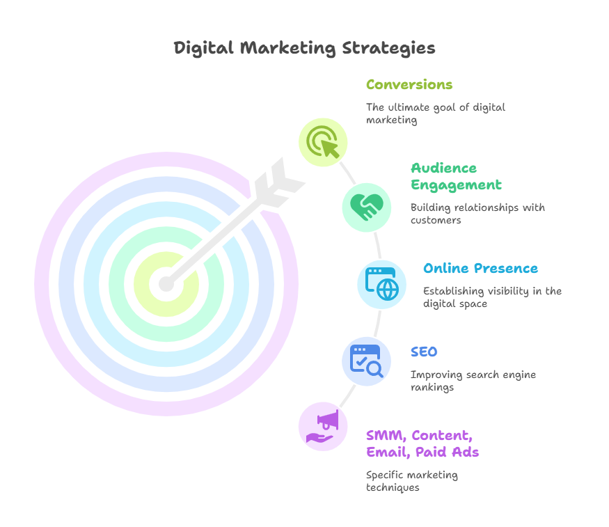

A digital marketing strategy is the roadmap that aligns your online efforts with your business goals. Use online platforms to reach their target audience, promote products/services and achieve goals like sales, leads, or brand awarenessHere’s a clear process to build one
Start by identifying what you want to achieve. Your goals should be SMART (Specific, Measurable, Achievable, Relevant and Time-bound). Increase website traffic by 30% in 6 months
Higher engagement shows stronger connections with your audience. This helps build trust, foster community and drive organic reach across platforms.
Awareness creates recognition. When more people know your brand you gain a competitive edge and attract more organic customers without heavy ad spend
Email remains a powerful conversion channel. Improved engagement means better targeting, stronger relationships, and higher conversions from campaigns.
Happy customers are more likely to recommend your brand, make repeat purchases, and defend you against competitors.  What is Digital Marketing & its types
What is B2B business & its Strategy Go to B2B Business Strategy